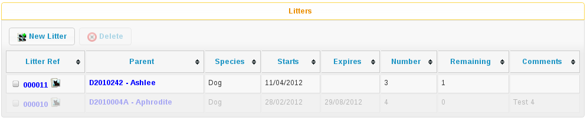
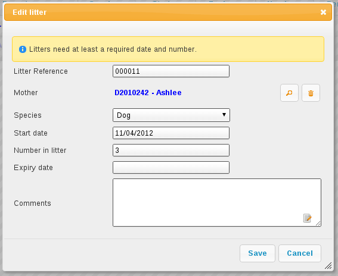

12 Litter Logging
Animal Shelter Manager allows you to track litters as they are born (or come into) the shelter. These facilities are used particularly for generating animal figures.
12.1 How the Litter Logger Works

The litter logger is accessible from ASM->Edit Litters. The main screen shows you a list of all currently active litters on the shelter. A litter is deemed active whilever any of the animals who were part of it are still on the shelter or it has an expiry date later than today.
If an animal is returned from adoption who was part of an expired litter, the litter will not be resurrected.
The litter holds information about how many animals collectively made it up, who the mother was (if known), what species of animal the litter is and any comments.

12.2 Completion Procedures
Depending on your shelter's practices, there are three different ways of completing a litter (indicating that all the animals in it have left the shelter and it should not be included in figures any more).
12.2.1 Automatic Litter Identification
By default, ASM has a system option enabled called “Automatic Litter Identification”. This means that any new litters you create will be automatically assigned a unique identifier.
A button is available on the edit animal toolbar allowing you to assign an animal to a litter. This populates the Litter ID field on the animal to show that it is part of the litter.
Once this is done, you don't need to do anything further, as ASM will watch for the animals leaving the shelter and automatically complete the litter for you.
12.2.2 Manually
The most difficult method, you must periodically check the litter records and enter the completion date accordingly for litters that have gone. This can be extremely inaccurate and is not recommended. It is here purely so that shelters can use litter facilities if they are unable to use the other methods.
12.2.3 After a Specific Time Period
You may optionally specify a date at which the litter will automatically become invalid.
12.2.4 Automatically with Litter IDs
Under this method, the system will check all the animals in the litter daily and the moment the last one has left the shelter through a means other than fostering (if the “Foster animals are shelter inventory” option is on), the litter will be cancelled. This method is 100% accurate and once you have entered the litter, you do not have to do anything else - the system will take care of it.
From the litter logger main screen, you can highlight a litter and call up all the animals in that litter. The litter logger main screen will also show you how many of the litter animals are currently left on the shelter.